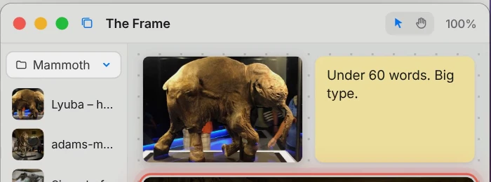
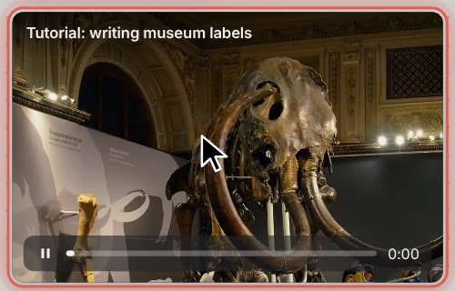

The film couldn't load.
A pocket knife for your ideas: a Mac menu bar app that keeps links, pictures, files and notes close while you work.
Get SwissSwiss


Found something worth keeping?
Drag a picture, a link, a file or a quote from any app onto a project. It lands on the board, right where you left off.
Turn on capture and what you copy and every screenshot waits in Recent for three days. One click keeps it in a project. Capture is off until you switch it on, and passwords are never kept.
Copied something in another app? Press ⌥⌘V and it's saved, without opening Swiss. ⌥ Space opens Swiss from anywhere.
A little order. In one click.
Every project is a tab, and a board fills up fast. The magic wand puts each thing in a folder for its kind: links in Linker, pictures in PhotoBook, notes in Notepad, the rest in Files.
Try it on this board. Paste a link, type a note or a file name, then wave the wand. Nothing you type leaves this page.
- en.wikipedia.org/wiki/Woolly_mammothLink
- Lyuba – hero print.jpgPicture
- Under 60 words. Big type.Note
- Exhibition plan.pdfFile
- rouffignac-cave.jpgPicture
- Opening night: 14 November.Note
A working copy of Swiss's board, made for this page.

Your folders. A faster way in.
Connect any Finder folder and work in it like a project. Rename a file in Swiss and Finder shows the new name straight away. Nothing is copied.
Move things between folders, tag them or delete them in Swiss, and the same happens in the real folder. Changes made in Finder show up in Swiss too.
Arrange a connected folder by name, kind, date or tags, the way Finder does, with Swiss's big previews.
Keep your references beside your work.
To begin, open the Frame: a canvas that floats above every app. Its library lists your projects and Recent, so you drag a picture or a note straight onto it, or double-click to add.

While you work, a tutorial plays right on the canvas. YouTube links and video files both play there, above the app you're writing in.

From then on, it's your desk: zoom, pan and move things around, and ⌘Z undoes any step. Close it and it comes back just as you left it.

Just the space you need.

Pop-up
Drops down from the menu bar, or opens anywhere with ⌥ Space.

Window
The green button steps up to a window with the sidebar, projects and connected folders.

Full screen
All the room there is, for a big project. Orange steps back down.
And the small blades.
Convert
- Pictures to JPG, PNG, HEIC
- Pictures to PDF
- Smaller pictures
- Videos to MP4, MOV
- Sound only
- Documents to PDF
- YouTube to MP3, MP4
Right-click anything ▸ Convert.
Keep it safe
- Recently Deleted
- Checked saves
- Hourly backups
- Touch ID lock
- Big files linked
- Careful with code
Nothing you keep is lost by accident.
Keys
- Open Swiss
- Quick save
- New folder or note
- Next project
- Quick Look
- Every key, listed
⌥ Space opens Swiss. ? lists every key.
Point at a blade to see what it does.
Privacy
- Account
- None
- Servers
- None
- Analytics
- None
Everything stays on your Mac. Your library is saved as ordinary files in a hidden folder in Documents, so it takes disk space like any file and syncs with iCloud only if your Documents folder does. Capture of the clipboard, screenshots and downloads is off until you turn it on.
The record
Swiss goes online only to
- fetch a saved link's title and picture
- get a picture you drag in from the web
- play a YouTube video on the Frame
- run a download you asked for
- update its downloader tool
Swiss never
- keeps passwords or private clipboard items
- reads password managers
- sends your library anywhere
- runs code files without asking
- Read the security report
Build it on your Mac in three commands.
Checking GitHub for the latest release…
Swiss 1.0 for . One payment, yours to keep. Checkout is on Lemon Squeezy's secure page: your card details never reach this site, and the receipt and the download arrive by email.
Swiss is ready.
Swiss isn't signed by Apple yet, so there's no download here for now. Its source is public and builds in a couple of minutes with Xcode, free from the App Store.
- Get the source:
git clone https://github.com/yotamkiper1/Swiss.git - Go into it:
cd Swiss - Build and install:
./build.sh install
- macOS
- 14 Sonoma or later
- Mac
- Apple silicon (M1 or newer). Intel Macs not yet.
- Needs
- Xcode, opened once, to build from source
- Help
- kipery20@gmail.com, or Help ▸ Report a Problem in Swiss
Questions
What can I keep in Swiss?
Links, pictures, files, notes and folders, dropped, pasted or dragged in from any app. YouTube links and video files also play on the Frame.
Does it capture my clipboard by itself?
No. Clipboard, screenshot and download capture is off until you turn it on in Settings ▸ Capture. Then new items wait in Recent for three days and you keep what you want. Passwords and private items are never captured.
Where are my files stored?
On your Mac, as ordinary files in ~/Documents/.Stash, so they use disk space like any file. Very large files are linked instead of copied. If iCloud syncs your Documents folder, it syncs these too.
How do connected folders work?
Pick a folder in Finder and it appears in Swiss's sidebar. Renaming, moving, tagging and deleting in Swiss change the real folder, and Finder's changes show up in Swiss.
Which Macs does it run on?
Macs with Apple silicon running macOS 14 Sonoma or later. Intel Macs aren't supported yet.
How do I report a problem?
In Swiss, choose Help ▸ Report a Problem. It opens an email you read and send yourself. Or write to kipery20@gmail.com.